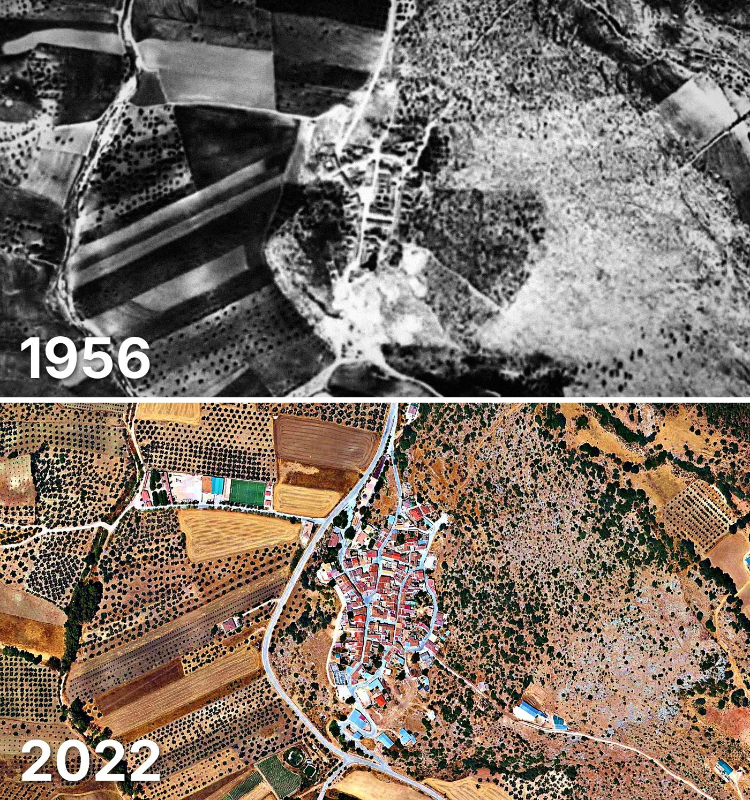

Alfarnatejo
Alfarnatejo tiene 250 edificios y 256 viviendas, y 358 habitantes en 2025. La mitad de sus edificios es de 1960 o posterior.
Cuándo se construyeron sus edificios
Desde 2015 se han terminado 2 edificios.

Las calles de Alfarnatejo con más viviendas
- Calle Iglesia · 20 viviendas
- Calle Real · 19 viviendas
- Calle Padre Arnaiz · 15 viviendas
- Calle Ancha · 11 viviendas
- Calle Llanete · 10 viviendas
- Calle Callejones · 7 viviendas
- Plaza la Constitución · 7 viviendas
- Calle Agua · 6 viviendas
- Calle Feria · 4 viviendas
Toda la información de Alfarnatejo en CASAS.ES →
Fotos de Alfarnatejo para publicar
Estas fotos aéreas de Alfarnatejo, de 1956 y de 2022, se pueden publicar gratis en un periódico, un blog, la web del ayuntamiento o las redes, citando la fuente como se indica debajo.

Descargar: las dos juntas · 1956 · 2022 (JPG, 1.400 px de ancho)


Texto listo para publicar
Alfarnatejo desde el aire: así era en 1956 y así es en 2022
Las dos fotos muestran el mismo encuadre de Alfarnatejo con 66 años de diferencia: arriba, el Vuelo Americano de 1956; abajo, la foto aérea del PNOA de septiembre de 2022. Hoy Alfarnatejo tiene 250 edificios y 256 viviendas, y 358 habitantes en 2025. La mitad de sus edificios es de 1960 o posterior. El 46 % de sus edificios ya estaba en pie antes de 1960.
Más datos de Alfarnatejo en CASAS.ES: casas.es/malaga/alfarnatejo
Cita para copiar
Fotos: Vuelo Americano Serie B (1956-57) y PNOA 2022, cedidos por © Instituto Geográfico Nacional (CC BY 4.0, scne.es). Datos y composición: <a href="https://casas.es/malaga/alfarnatejo/">los datos de Alfarnatejo en CASAS.ES</a>Descarga: municipios (CSV) · calles (CSV) · Wikidata (Q1623954) · cómo usarlos en Python (dev.to) · también en OSF, Figshare y B2SHARE